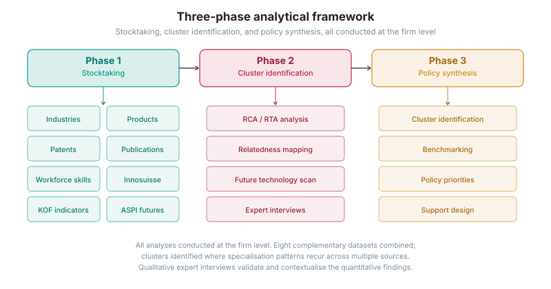
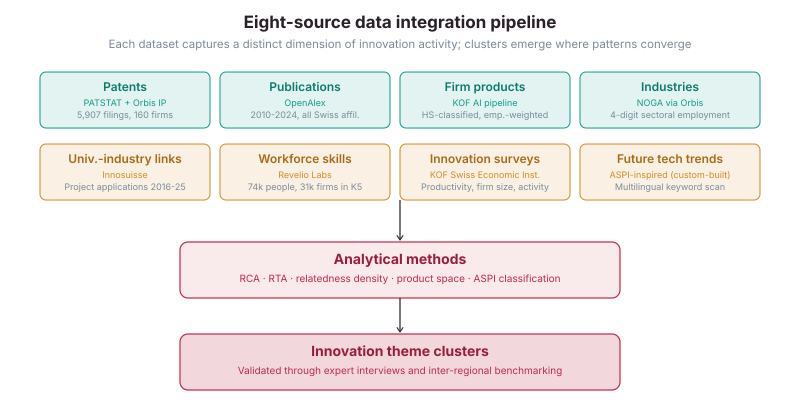
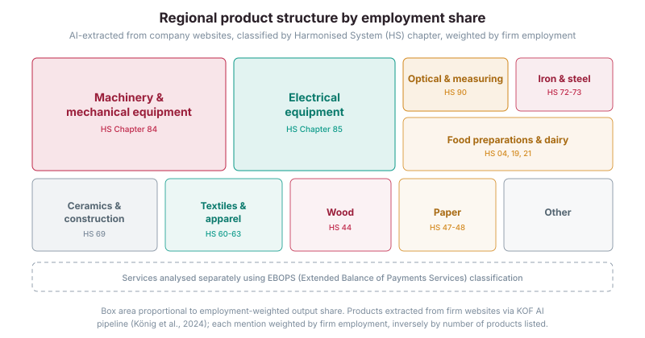
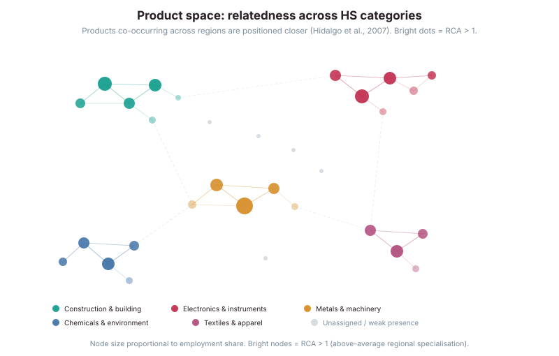
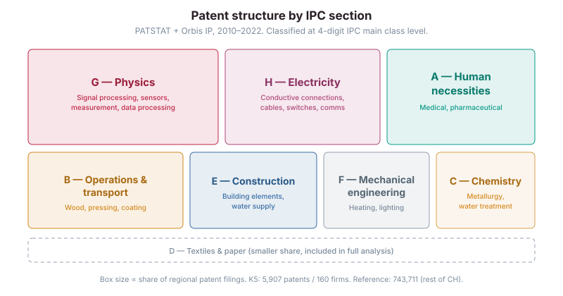
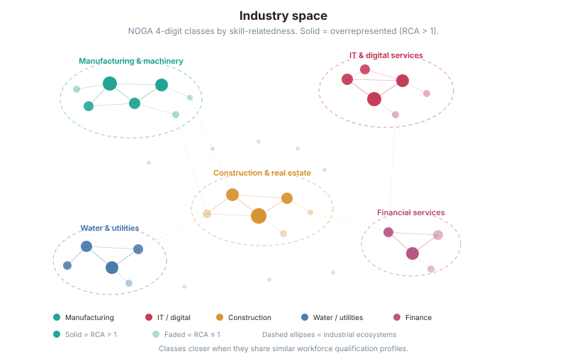
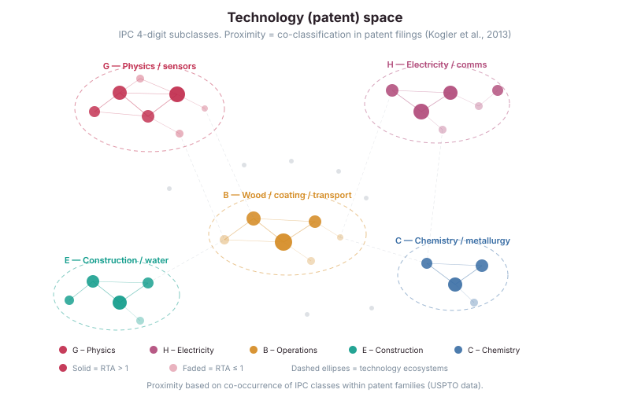
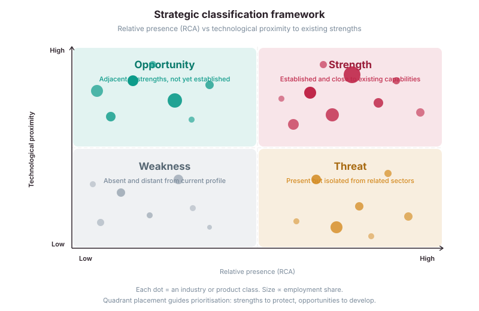

Innovation Landscape of the Luzern Region
Mapping a regional innovation ecosystem through multi-source data analysis.
January 2026 · 8 min read
KOF Swiss Economic Institute, ETH Zürich
With T. Hütner Reisch, M. König, M. Salvetti, and M. Wörter
In brief: This study, commissioned by the City of Lucerne, set out to identify the region's forward-looking innovation priorities. We combined eight distinct firm-level datasets, including patent filings (PATSTAT), scientific publications (OpenAlex), AI-extracted product portfolios from company websites, workforce skill profiles (Revelio Labs), and university-industry collaboration records (Innosuisse), to build a comprehensive picture of where the regional economy is strong, where it could realistically grow, and what kinds of policy support would be most effective. The analysis produced a set of thematic innovation clusters, each with tailored recommendations validated through expert interviews.
The question
Regional innovation policy works best when it builds on what already exists. But figuring out what a region is actually good at, and where it could plausibly move next, requires more than intuition. The City of Lucerne and the surrounding K5 municipalities wanted a rigorous, data-driven assessment of their innovation ecosystem: not just a list of large employers, but a fine-grained picture of technological strengths, product specialisations, research activity, workforce capabilities, and connections to future-oriented technologies.
The challenge is that no single dataset captures all of this. Patent data reveals technological invention but misses service-sector innovation entirely. Industry classifications show how many people work where, but not what firms actually produce. Publication data tracks scientific output but says nothing about whether it translates into commercial activity. You need to triangulate across multiple sources, and you need to do it at the firm level to see the real structure.
How we approached it
The study is structured in three phases. The first is a comprehensive stocktaking: we mapped the regional economy across eight complementary dimensions, from industrial structure and patent activity to workforce skills and firm-level product portfolios. The second phase applies analytical methods, notably Revealed Comparative Advantage (RCA) and Revealed Technological Advantage (RTA), to measure where the region is genuinely specialised relative to the Swiss average, and relatedness analysis to identify which new fields are closest to the region's existing capability base. The third phase synthesises these findings into policy-relevant innovation clusters and concrete recommendations.

The intellectual foundation draws on the economic complexity literature, particularly the idea that diversification is path-dependent. Regions rarely develop strengths in areas completely unrelated to what they already do. A region strong in mechanical engineering and sensor technology is far more likely to develop capabilities in smart water infrastructure than in, say, fashion or pharmaceuticals. Relatedness analysis, which measures how frequently two activities co-occur across regions or firms, is the primary tool we use to distinguish realistic growth opportunities from aspirational ones.
The data
The study integrates eight distinct data layers. Each captures a different facet of the innovation ecosystem. The table below summarises each source, its provider, and what it contributes to the analysis. All analyses are conducted at the firm level wherever the data permit.

What the region produces
One distinctive feature of this study is the product-level analysis. Traditional statistics classify firms by industry code (NOGA), which tells you a firm is "in manufacturing" but not whether it makes precision instruments or packaging materials. We used a custom AI pipeline developed at KOF (König et al., 2024, 2025) to scan every company website in the region, extract listed products and services, and map them to Harmonised System categories. Each mention is weighted by the firm's employment and inversely by the number of products it lists, producing an employment-weighted estimate of regional output by product category.

We then mapped these products in a "product space," following the approach pioneered by Hidalgo et al. (2007) in the Atlas of Economic Complexity. The idea is straightforward: products that tend to be made in the same regions are "related," because they require similar inputs, skills, or infrastructure. A region that already produces precision machinery is more likely to diversify into sensor equipment than into textiles. The product space makes these adjacencies visible, showing where realistic diversification paths exist.

Where the region invents
Patent data offers a complementary perspective: not what firms produce, but what they invent. Using PATSTAT and Bureau van Dijk Orbis IP, we linked 5,907 patent filings to 160 firms in the K5 region and classified them by 4-digit IPC (International Patent Classification) codes. For comparison, the rest of Switzerland accounts for 743,711 patents across 8,887 firms over the same period. This asymmetry is precisely the point: by comparing the region's patent profile to the national average, we can identify fields where the region punches above its weight, measured by the Revealed Technological Advantage (RTA) index.

We then constructed two network maps that reveal the deeper structure of the regional economy. The first is the "industry space," where industries that require similar workforce qualifications are positioned closer together (following Neffke & Henning, 2013). The second is the "technology space," where patent classes that frequently co-occur within the same patent families are positioned closer (following Kogler et al., 2013). Both maps serve the same purpose: they show which new fields are closest to the region's existing capabilities, and therefore represent the most plausible targets for diversification.


Bringing it together
With all eight data layers in hand, we synthesised them into a strategic classification. Every sector and product is mapped along two dimensions: its current presence in the region (measured by RCA or RTA) and its technological proximity to the region's existing capability base (measured by relatedness density). This produces four quadrants.
Strengths (top-right) are fields where the region already has above-average presence and that connect well to its broader economic profile. These should be protected and deepened. Opportunities (top-left) are fields where the region does not yet have a strong presence, but the required capabilities are adjacent to what it already does. These represent the most realistic growth paths. Weaknesses (bottom-left) are distant and absent, unlikely targets for near-term development. Threats (bottom-right) are fields where the region has some presence, but they are isolated from the rest of the economy and therefore potentially vulnerable.

The quantitative analysis was complemented by in-depth interviews with practitioners from the identified innovation fields. These conversations provided essential context that data alone cannot capture: the practical challenges of scaling timber construction businesses, the difficulty of integrating sensor systems into ageing water infrastructure, and the regulatory bottlenecks that slow adoption of new environmental technologies. The combination of rigorous data work and on-the-ground practitioner insight is what gives the final cluster identification its credibility.
Implications for policy
One of the clearest findings of this study, echoed across both the data and the interviews, is that innovation support should focus less on funding individual technologies and more on solving integration problems. In several of the identified clusters, the biggest challenge is not inventing something new but combining existing technologies in smarter ways. A modern wastewater monitoring system, for example, requires expertise in drilling, hydraulics, sensor design, data transmission, and regulatory compliance. No single firm covers all of that. The innovation happens at the interfaces, and policy can play a role by creating spaces where different actors come together to solve concrete integration challenges.
The report proposes cluster-specific fields of action that account for differences in firm-size structure (some clusters are dominated by small, specialised firms; others by larger players), regulatory complexity, and the strength of existing links to higher education. Some clusters would benefit most from better visibility and matchmaking with academic partners. Others need test environments, like Empa's NEST facility, where firms can experiment under realistic conditions. Several would gain from public procurement that signals demand for innovative solutions. The concrete instruments are designed to be developed jointly with local support bodies, firms, industry associations, and universities.